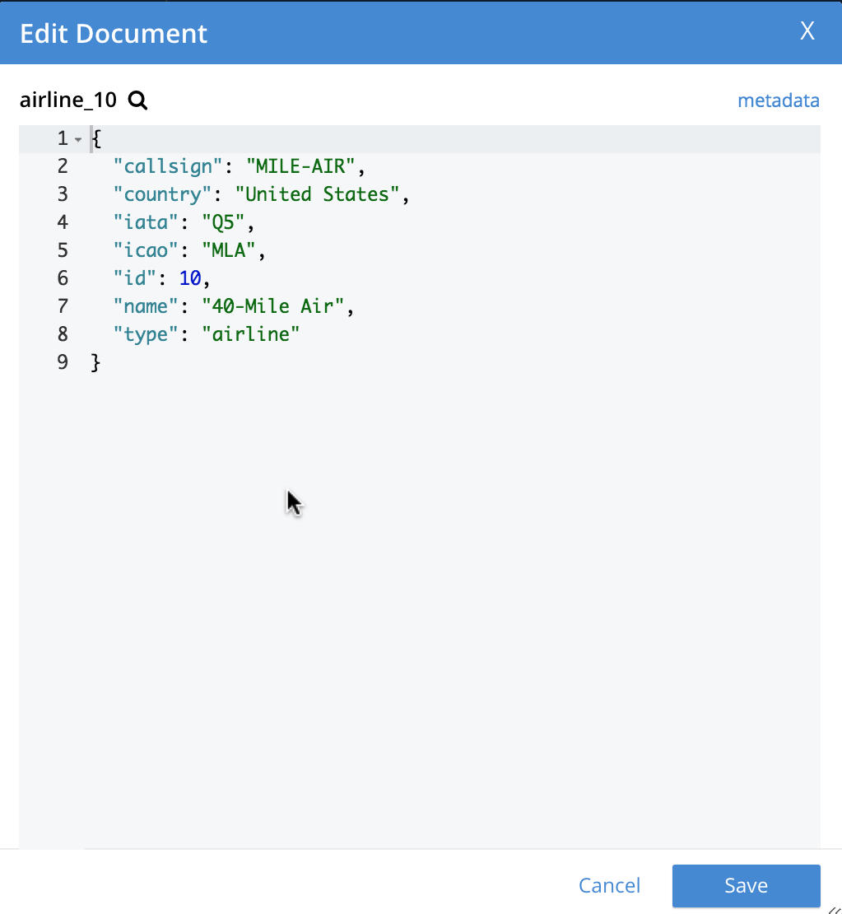
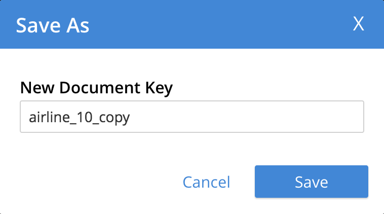

Explore the Server Configuration
Once you have Couchbase Server running, you can log into the Couchbase Server Web Console, and start to examine the different features that it provides. These features include an interface for inspecting Couchbase documents, organized within buckets.
Access the Console and Log In
The default address for the Couchbase Server Web Console (whether it is running in a Docker virtual environment, or directly on your platform) is localhost:8091.
Enter the address into the address bar of a supported Web browser, and hit Return.
The Couchbase Server log-in screen is displayed:

The Docker image that you installed comes pre-configured with a default username and password:
-
Username:
Administrator -
Password:
password
Type these credentials into the appropriate fields and click Sign In.
Examine the Cluster Dashboard
Every time you log into the Web Console, you are brought to the Cluster Dashboard:
The Cluster Dashboard provides a graphical summary of the current state of your Couchbase cluster. The term cluster might seem unexpected at this point, since you are only running a single instance of Couchbase Server; but nevertheless, it counts as a cluster of one.
All of the values that are displayed on this screen were automatically configured by the sandbox container image during installation. In production, you will specify these values individually according to your needs.
Notice the information panel at the very bottom. This shows that you have a single active bucket on the system — bucket meaning a logical group of data-items. Taking a closer look at this bucket will give you some idea of how Couchbase stores data, and prepare you to make your first data-queries.
Examine Your Bucket and Its Documents
Click Buckets in the left-hand navigation bar to bring up the Buckets screen.
The Buckets screen shows that you have a single active bucket on the system (bucket meaning a logical group of data-items). Taking a closer look at this bucket will give you some idea of how Couchbase stores data, and prepare you to make your first data-queries:
The single bucket (travel-sample) appears towards the left of the single row.
Links to explore the contents of the bucket are provided in the right-most column of the row: Documents and Scopes and Collections.
Click Scopes and Collections to inspect the scopes and collections contained within the bucket.
The Scopes and Collections screen shows, in a succession of page-views, the scopes that are contained within the bucket.
To see the collections that are contained within a given scope, left-click on the row for the scope — for example, for the inventory scope:
In Couchbase Server 7.0 and later, all documents must be contained in a scope and collection.
If you import a dataset that was created in earlier versions of Couchbase Server, the documents are automatically saved within a _default scope and a _default collection.
For your initial work with the system, this will be fine.
But as you continue, and you create more documents, your will benefit from using scopes and collections to organize those documents in the best way: this will make data-access intuitive and clear.
See the Other Destinations section, below, for a link to information on creating and managing your own scopes and collections.
Click Documents, located towards the right of the row, to inspect the individual documents that are contained within the scope or the collection.
The Documents screen shows, in a succession of page-views, the documents that are contained within the selected scope and collection — in this case, the default scope and collection.
The following document retrieval controls are provided:
-
Keyspace: Three drop-down menus, which respectively allow selection of a bucket, a scope within the selected bucket, and a collection within the selected scope. The documents within the selected collection are those that will be retrieved. (For information on scopes and collections, see Scopes and Collections).
-
Limit: The maximum number of rows (documents) to retrieve and display at once.
-
Offset: The number of documents in the entire set of the current collection that should be skipped, before display begins. Notice that when you click Next Batch >, the Offset increases by the same value that is specified in Limit.
-
Document ID: Accepts the ID of a specific document. Leave this field blank to retrieve documents based on Limit and Offset.
-
SQL++ WHERE: Accepts a SQL++ query — specifically a WHERE clause — which determines the subset of documents to be displayed. (You will learn more about SQL++ in a later step of this Getting Started sequence.)
In the results, each document is represented by an individual row that contains its ID and a summary of its contents. You can switch between two views: simple and spreadsheet. In the spreadsheet view, you can edit the document fields directly, since each key has its own column in which the corresponding value for each document is provided, row by row.
The following buttons appear on the left side of each row:
-
Edit document as JSON: Click this button to bring up the Edit Document dialog, which allows you to make direct edits to the document:
The document consists of a series of key-value pairs (or, as they are sometimes expressed, name-value pairs). You can make modifications to key-values directly in this editor. As will be demonstrated later, Couchbase Server allows you to search for keys, and return the corresponding values, by means of a query. For example, here, if you searched on the name
country, you would return the valueUnited States; if on the nameicao, the valueMLA.If you make changes in the Edit Document dialog, click Save to save your changes. If you want to create a new document based on an existing document, you can click the Make a copy of this document button (described next). If you want to create an entirely new document, you can click the ADD DOCUMENT button in the upper-right.
Note that Couchbase Web Console supports the editing of documents that are up to 10 MB in size (although documents on Couchbase Server can be up to 20 MB in size).
-
Make a copy of this document: Click this button to bring up the Save As dialog, which allows you to create a new document based on the existing one:
Either click the Save button to save the copy under the placeholder name that is provided, or edit the placeholder-name before saving.
Note that if you are using the spreadsheet view, any unsaved changes that you have made to document key-values will be saved in the copied document and not the original, much like the behavior of traditional text editing software.
-
Delete this document: Click this button to delete the document.
-
Save changes to document: If you make changes in the spreadsheet view, this button becomes active for the current row. Click it to save your changes to the document.
To view successive sets of documents, use the Next Batch > and < Prev Batch buttons.
Other Destinations
-
Managing Scopes and Collections: Contains basic information about scopes and collections.
-
Manage Buckets: Contains basic information about buckets.
-
Data Model: Provides more information about the Couchbase data-model.